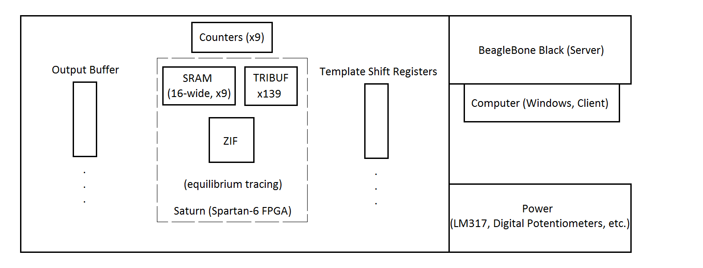

Completed Investigations
High Level Diagram of Project (Tentative)

Wireless Communication and File Uploading
Norm was the first to suggest using a BeagleBone Black (which runs Linux) within the project. Eventually, Daniel and Norm conceptualized and settled on the idea of using the BeagleBone Black as a server that accepts test files from clients. Norman is currently investigating use of the BeagleBone Black in greater detail.
Using an FPGA
In our senior project, we used a Numato Spartan-6 FPGA Saturn board (with 150 available I/O pins) to house all of our testing circuitry. After much deliberation, we have decided to use the newest Saturn board for this project. (The other idea we debated on was using MOSIS-fabricated chips to house our older testing logic. However, we decided with time that we didn't want to be constrainted by MOSIS' fabrication deadlines and unconfigurable hardware.)
Force Formats
In order to implement force formats (R0, R1, DNRZ_L, DNRZ_T), we have proposed using this Verilog design. Daniel has tested this design and it appears to work as we want it to.
{kind=link}
Schmooing
For modulating high voltages sent to a chip, we believe a LM317 op-amp, an op-amp configured as a buffer, some discrete components, and a digital potentiometer (likely to be controlled by the BeagleBone Black) will be sufficient for our project. This circuit (proposed by the LM317 datasheet) has been simulated in PSpice and tested on a breadboard; it appears to work very well and allows us to create a variable voltage between 0V and 5V. The circuit is inspired by the design described here. PSpice files will be available soon!
Real-Time Testing
We believe real-time testing can be implemented using the Spartan-6 FPGA's block RAM to hold input test vectors and individual SRAM chips and counters to hold output signals sampled during every test cycle. Please see this image to understand our idea of using SRAM chips and counters.
{kind=link}
Conditional Input Test Vectors
The LV500 allows users to provide conditional input test vectors. The idea is that you can run a test vector (e.g. a test vector that just clocks a circuit) until some done bit changes state, at which point you execute the next few test vectors. Right now, Norm and Daniel plan to allow test vectors to be addressed (to provide the ability to jump to previous test vectors) and combined with a number indicating how often a test vector is to be run.
Timing Characteristics
Using Altium Designer, we will create a 4-layer PCB with traces of as equal length as we can. We will be taking advantage of Advanced Circuits' student promotion of a 4-layer PCB board (maximum 30 square inches) for $66.
Using a BeagleBone Black (BBB) as a web server
Norm has investigated using the BeagleBone Black and has successfully set up a web server that can interact with the BBB's IO.
Generating clock signals using a Spartan-6 FPGA
After testing, Daniel believes we can generate trustworthy clock signals using an FPGA board.
Click here to return to the home page.